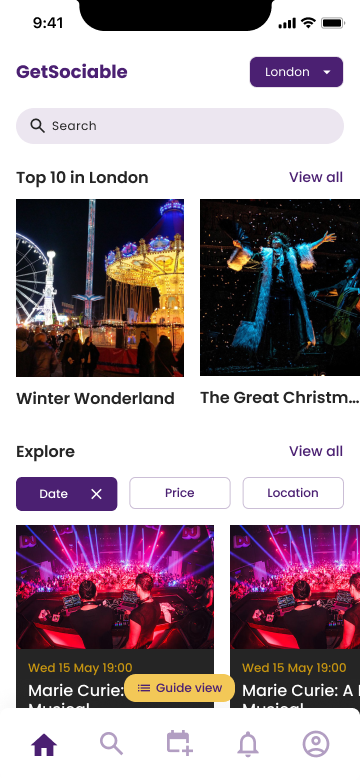
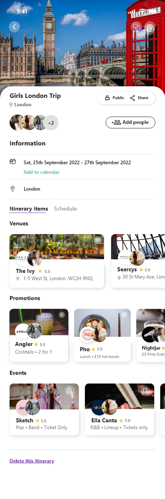
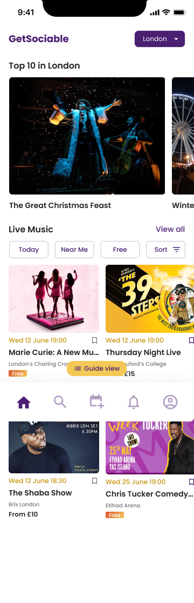
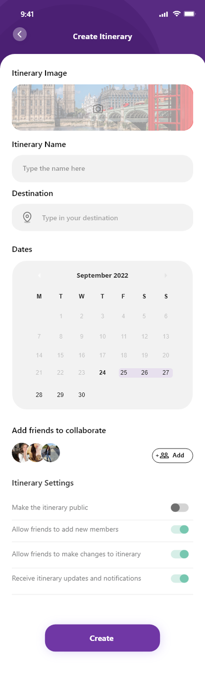
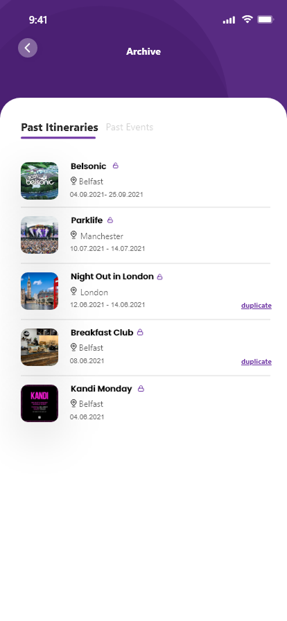
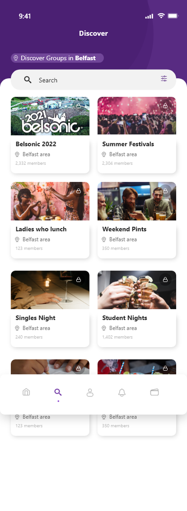
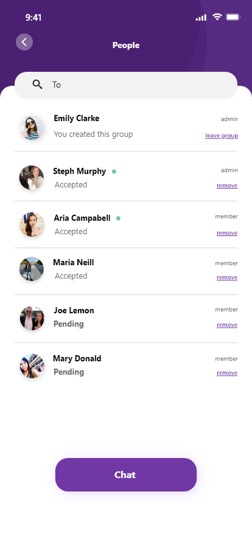
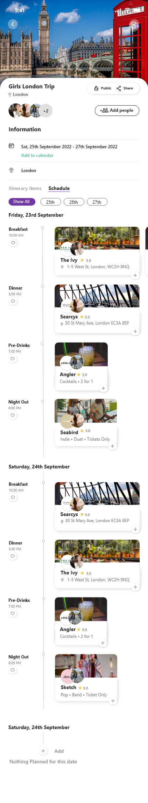

Unclear information hierarchy
All content was weighted equally, making it impossible to distinguish primary actions (book a trip) from secondary features (view recommendations, social content).
New users dropped off before they could even start booking. By applying design systems thinking, introducing a collaborative trip planner, and simplifying the information hierarchy, I reduced drop-off by 3% and created a more intentional booking experience for event enthusiasts.

GetSociable's homepage was designed to showcase everything the platform could do—but in doing so, it created decision paralysis. Unclear hierarchy, broken navigation flows, redundant content sections, and typography that was difficult to read meant users never made it to the booking flow. They left before understanding the value proposition.
"There's too much going on. I don't know where to start or what to do first."
User interview feedback
All content was weighted equally, making it impossible to distinguish primary actions (book a trip) from secondary features (view recommendations, social content).
Navigation gaps and unclear pathways left users unsure of how to progress from browsing events to creating a group booking.
Redundant sections and small text sizes created cognitive overload, making the experience feel cluttered rather than curated.
This was my first project in the events and entertainment space. To understand user behaviour authentically, I conducted 15+ face-to-face interviews, analysed 150+ survey responses, studied Hotjar heatmaps and session recordings, and examined Google Analytics behavioural data. The research revealed that users weren't struggling with the concept— they were struggling with how the product presented that concept.
Face-to-face and remote conversations with event enthusiasts, group organisers, and lapsed users to understand their mental models, pain points, and what would make group trip planning feel seamless.
In-app survey to quantify where friction points were most severe. Navigation issues and homepage clarity emerged as the top complaints.
Session recordings and heatmaps showed that most users entered the app, spent 2-3 minutes on the homepage, then exited without exploring further. The homepage was the bottleneck.

15+ structured and semi-structured interviews with both active users and those who had churned. I asked about their mental models: "How would you describe what GetSociable does?" Most couldn't articulate it. I also observed them attempting to book a trip cold, noting where they got stuck and what confused them.


Hotjar session recordings revealed a consistent pattern: users land on the homepage, scroll for 2–3 minutes, then leave without clicking into any core features. Heatmaps showed that attention concentrated on the top-left corner, while other interactive elements (like "Create Trip" or "Browse Events") received minimal engagement. Google Analytics showed the homepage was the highest drop-off point in the user journey.


I audited the existing app against usability heuristics and Nielsen's 10 Usability Principles. The evaluation identified 12 distinct issues, grouped into three categories: navigation clarity, content hierarchy, and visual design. This provided a framework for prioritisation.


Rather than a full visual overhaul, the redesign focused on structural and systemic improvements: a clear information hierarchy, consistent design patterns, and the introduction of a collaborative trip planner.
I created a simple but comprehensive design system covering typography (headings, subheadings, body, captions), button states, spacing, and colour. Every UI element now followed consistent rules, reducing cognitive load and improving visual coherence. The system was documented so engineers and future designers could maintain consistency.

The biggest change was introducing a new primary feature: the Trip Planner. Users could select dates, browse available events, create a group, invite friends, and plan collaboratively with real-time notifications. This became the core user flow.

I reorganized the homepage and navigation to clearly distinguish primary actions (Book, Create Trip, Browse) from secondary content. Redundant sections were removed or consolidated. Banners were redesigned to draw attention to key features without overwhelming. The result was a streamlined experience that guided users toward intent.

The Trip Planner was the centrepiece of the redesign. It transformed GetSociable from "an event discovery app" to "a way to plan group outings together." Below is how I structured the user flow and the design decisions behind each step.

Users begin by choosing when they want to plan a trip. A calendar picker makes it clear how far in advance they can book, and it hints at available events for those dates. This gives users confidence that events exist before they commit to dates.

Once dates are set, users see available ticket tiers (VIP, Standard, Student) and can select quantities for their group. Clear pricing and availability reduce decision anxiety. The design uses consistent button states and number inputs to make selection feel intuitive.

The system filters events to show only those happening on the chosen dates. A card-based layout makes it easy to scan: event name, image, time, price, and quick actions. This design pattern was replicated throughout the app for consistency.

Users name their trip (e.g., "Barcelona Weekend with College Friends") and set it as public or private. This makes group management straightforward. The naming step also creates a psychological commitment—users are more likely to follow through once they've named the trip.

Users can add friends via contacts, email, or share a shareable link. A list of invited members shows acceptance status. This makes group coordination transparent and reduces the friction of coordinating outside the app.

Once the trip is live, all members see real-time updates: new event additions, itinerary changes, confirmations. Push notifications keep everyone aligned. This feature transformed GetSociable from a personal planning tool to a collaborative platform.

Drop-off rate on homepage (3% improvement)
of users creating group trips (new feature adoption)
Cofounder feedback: "The app is doing really well"
Design system adoption across the app
This project taught me that sometimes the most impactful design work isn't about flashy features— it's about clarity, consistency, and understanding user mental models. By establishing a design system early and grounding every decision in user research, we reduced decision friction both for users and for the internal team.